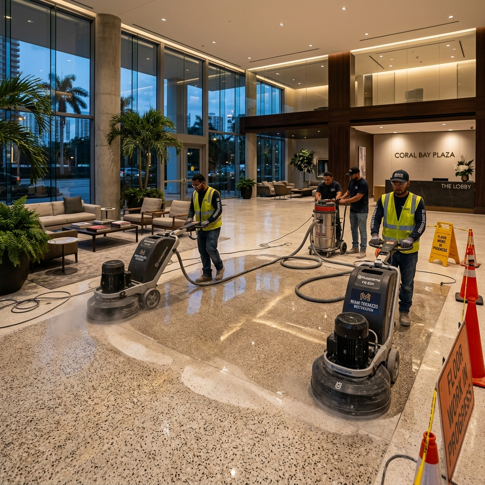
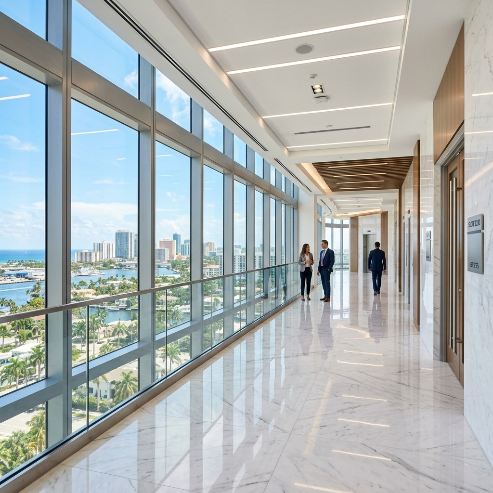

Commercial Floor Renovation in Miami: The Property Manager's Playbook
A comprehensive guide to floor renovation in South Florida — covering restoration vs. replacement decisions, surface types, cost factors, timelines, and how to choose the right floor renovation partner.
If you manage a commercial property in Miami, Fort Lauderdale, or anywhere in South Florida, floor renovation is likely the single most impactful physical improvement you can authorize. Floors account for the largest visible surface area in any commercial space — and their condition directly shapes how tenants, customers, and visitors perceive your property within seconds of walking through the door.
Yet most property managers face the same challenge when a floor renovation in Miami becomes unavoidable: they don't know whether the floor needs restoration, full replacement, or some combination of both. They aren't sure which surface types can be saved and which have reached the end of their functional life. And they struggle to compare bids from contractors who define "floor renovation" in completely different ways.
This guide exists to fix that problem. Whether you're managing an office tower in Brickell, a retail center in Fort Lauderdale, or a multi-tenant complex in Broward County, you'll walk away understanding exactly what your commercial floor renovation project requires — before you request a single quote.
Floor Renovation vs. Floor Restoration vs. Floor Replacement: What's the Difference?
These three terms are used interchangeably by contractors across South Florida, which creates confusion and makes bid comparison nearly impossible. Here's what each one actually means in a commercial context.
Floor Renovation — The Broad Category
Floor renovation is the umbrella term for any significant improvement project involving commercial floors. It can include restoration work, full replacement, surface conversion (like carpet-to-polished-concrete), or a combination of scopes across different zones of a building. When a property manager says they need a "floor renovation," they're describing the outcome they want — not a specific method.
Floor Restoration — Bringing Existing Floors Back to Life
Floor restoration means returning an existing floor surface to its original (or better) condition without removing the material. This includes processes like diamond polishing, honing, crystallization, stain removal, crack repair, and protective sealing. Restoration is typically the best option when the substrate is structurally sound but has suffered cosmetic degradation — dullness, scratches, etching, or contamination.
Floor Replacement — Removing and Installing New
Floor replacement involves removing the existing surface material entirely and installing a new flooring system. This is necessary when the substrate is compromised beyond repair, when the floor material is obsolete or damaged (e.g., asbestos-containing tile), or when the property owner wants to change the floor type entirely — such as replacing carpet with polished concrete.
Key insight: Many commercial floors that property managers assume need full replacement can actually be restored at 40–60% of the replacement cost. A proper floor surface assessment before committing to a scope can save tens of thousands of dollars on a typical commercial project in Miami or Fort Lauderdale.
When Each Approach Is the Right Choice
| Factor | Floor Restoration | Floor Replacement | Combination |
|---|---|---|---|
| Typical Cost | $3 – $8 / sq ft | $8 – $20+ / sq ft | Varies by zone |
| Timeline | 1 – 5 days | 1 – 4 weeks | 2 – 6 weeks |
| Disruption Level | Low to moderate | High | Moderate |
| Result Quality | Like-new finish | Brand-new surface | Mix of both |
| Best For | Sound substrate, cosmetic damage | Structural failure, material change | Mixed conditions across zones |
Types of Commercial Floor Renovation Projects in South Florida
South Florida commercial properties feature a wide range of floor surfaces — each with its own renovation requirements. Here are the most common commercial floor renovation project types we execute across Miami, Fort Lauderdale, and Broward County.
Concrete Floor Renovation
Concrete is the most versatile commercial floor surface. Renovation options include mechanical diamond polishing to achieve a high-gloss or matte finish, acid staining for decorative color, epoxy or polyaspartic coating systems, and crack repair with structural filling. Concrete floor renovation in South Florida is especially popular for warehouses-to-office conversions and modern retail environments. Related reading: Commercial Concrete Polishing in Miami — The Property Manager's Guide
Marble & Terrazzo Renovation
Miami and Fort Lauderdale are home to thousands of commercial buildings with original marble and terrazzo floors — many of which are 30–60 years old. Renovation typically involves honing (removing surface damage), polishing to restore reflectivity, and crystallization for long-term protection. These floors are almost always worth restoring rather than replacing. Related reading: Terrazzo Floor Restoration in Miami — How to Restore Heritage Floors

Restored marble corridor in a Fort Lauderdale commercial building — polished to mirror reflectivity without replacement.
Tile Floor Renovation
Tile renovation in commercial settings ranges from deep cleaning and grout restoration to full tile removal and replacement. Large-format porcelain tile is the most common replacement material in South Florida commercial properties due to its durability, moisture resistance, and low maintenance requirements.
Carpet-to-Hard-Surface Conversion
One of the fastest-growing floor renovation categories in Miami's commercial market. The process involves carpet removal, adhesive extraction (often the most labor-intensive step), subfloor evaluation, and then either polishing the existing concrete substrate or installing new flooring material. This single project type often involves both floor removal and installation scopes. Related reading: Commercial Floor Polishing in Miami — A Property Manager's Guide
Stone Floor Renovation
Natural stone surfaces — limestone, travertine, and slate — require specialized restoration including lippage correction, honing, sealing, and sometimes color enhancement. South Florida's humidity and salt air make proper sealing critical for stone floor longevity. Related reading: Commercial Paver Sealing in South Florida
The Commercial Floor Renovation Process
A professional floor renovation company in Miami follows a structured process — not a one-size-fits-all approach. Here's what a proper commercial floor renovation project looks like from evaluation through completion.
1. Floor Condition Assessment
Every floor renovation project in South Florida should begin with a professional floor surface assessment. This is not a sales visit — it's a technical evaluation of: surface material identification, substrate condition and structural integrity, damage classification (cosmetic vs. structural), moisture vapor levels (critical in South Florida), existing coating or sealant condition, and square footage and access complexity.
Why does this matter? Because the assessment determines whether your floor needs $4/sq ft restoration or $15/sq ft replacement — and rushing to a quote without it leads to overspending or underscopping.
2. Option Evaluation & Recommendation
Based on the assessment findings, a qualified floor renovation contractor in South Florida will present options: restore the existing surface, replace it entirely, or execute a combination approach where different zones receive different treatments. This is where the floor restoration vs floor replacement decision gets made — with data, not assumptions.
3. Scope Definition & Timeline Planning
The project scope must account for: access requirements in occupied buildings, phased vs. all-at-once execution, material lead times (especially for replacement projects), coordination with other building improvement scopes, and floor transition planning between different surface types or zones.
4. Preparation & Mobilization
Subfloor preparation is often the most underestimated phase. It includes adhesive and glue removal from previous flooring, concrete grinding or leveling, crack repair and structural filling, moisture barrier installation when necessary, and dust containment and protection of adjacent finished areas.
5. Execution
Surface-specific processes are applied using commercial-grade equipment and materials. Concrete polishing requires multi-step diamond grinding. Marble restoration requires honing and crystallization. Tile installation requires precision layout and grout application. Each surface type demands its own methodology — a key reason to select a floor renovation company with multi-surface expertise.

Diamond polishing equipment restoring a terrazzo floor in a Miami commercial lobby.
6. Sealing, Protection & Handover
Final sealant application, protective coating, and cure-time management. The completed floor is documented with photos, and maintenance guidelines are provided to the property management team.
Commercial Floor Renovation Cost in Miami: What Drives the Price?
"How much does commercial floor renovation cost in Miami?" is the most common question property managers ask — and the honest answer is: it depends on five factors that vary dramatically between projects.
Surface Type & Condition
A terrazzo floor that needs light polishing is a fundamentally different project from a concrete floor with deep structural cracking. Surface type determines the equipment and methodology required; condition determines the labor intensity and material cost.
Square Footage & Access Complexity
Per-square-foot costs typically decrease with larger projects due to equipment efficiency. However, tight spaces, multi-floor buildings with freight elevator limitations, and complex layouts can offset that economy. A 10,000 sq ft open warehouse floor costs significantly less per foot than 10,000 sq ft distributed across 40 individual offices.
Restoration vs. Replacement Economics
Restoration projects typically cost 40–60% less than full replacement for the same area. The economic case for restoration is strongest when the existing substrate is sound and the damage is primarily cosmetic.
Material Costs (for Replacement Projects)
Floor material selection drives a significant portion of replacement project costs. Large-format porcelain tile, premium vinyl plank, polished concrete overlay, and natural stone each carry different material and installation costs. Material lead times in South Florida can also impact project scheduling.
Timeline & Schedule Constraints
After-hours work, weekend execution, and accelerated timelines all carry premium pricing. Properties requiring minimal disruption during business hours will see higher costs compared to projects with unrestricted access.
| Project Type | Cost Range / sq ft | Typical Timeline |
|---|---|---|
| Concrete Polishing (restoration) | $3 – $7 | 1 – 3 days |
| Marble / Terrazzo Restoration | $4 – $10 | 2 – 5 days |
| Tile Replacement | $8 – $18 | 1 – 3 weeks |
| Carpet-to-Hard-Surface Conversion | $6 – $15 | 1 – 2 weeks |
| Full Floor Replacement (stone/tile) | $12 – $25+ | 2 – 4 weeks |
Why an evaluation before pricing saves money: A proper condition assessment often reveals that only 30–50% of a floor area actually needs replacement — while the rest can be restored. This alone can reduce total project cost by 25–40% on a typical commercial floor renovation in Miami.
How Long Does Commercial Floor Renovation Take?
"How long does commercial floor renovation take?" depends on scope, surface type, building access, and material lead times. Here are realistic expectations for South Florida commercial projects.
Restoration-only projects (polishing, honing, sealing) typically complete in 1–5 days for areas under 10,000 sq ft. Full replacement projects involving demolition, subfloor prep, and new material installation can take 2–4 weeks for the same area. Multi-zone combination projects — where different areas receive different treatments — typically fall in the 2–6 week range.
Critical factors that affect timeline:
- Building access restrictions: After-hours-only access can double or triple the elapsed calendar time
- Material lead times: Specialty tile, natural stone, and custom-color materials may require 2–6 weeks for delivery in South Florida
- Phased execution: Working zone-by-zone in occupied buildings extends timelines but minimizes disruption
- Cure and dry times: Sealants, adhesives, and coatings each require specific cure periods that cannot be rushed in South Florida's humidity
Be cautious of contractors who promise timelines that seem too fast. Cutting corners on cure time, subfloor preparation, or diamond polishing steps will produce inferior results that require premature re-renovation.
Floor Renovation in Occupied Commercial Buildings
Most commercial floor renovation in Miami and Fort Lauderdale happens in buildings that are fully or partially occupied — which introduces logistical complexity that separates experienced floor renovation contractors from inexperienced ones.
Phased execution strategies are essential. The floor area is divided into zones, and work progresses zone-by-zone so that tenants, customers, and building operations continue with minimal interruption. This requires precise scheduling, dust containment barriers, and clear communication with building management.
Noise and dust management is non-negotiable in occupied space renovation. Industrial diamond polishing equipment, adhesive removal machines, and demolition tools generate significant noise and particulate matter. Professional floor renovation service providers use HEPA filtration, dust shrouds, negative air pressure containment, and scheduled noise windows aligned with building operating hours.
After-hours and weekend work is standard for high-traffic commercial properties. Lobbies, corridors, and common areas in Miami and Fort Lauderdale office buildings are typically renovated during evening and weekend shifts. This capability — and the willingness to staff it — is a key differentiator when evaluating floor renovation companies near me.
Communication with tenants and building management must be proactive and structured. Weekly progress updates, advance noise notifications, and clear signage around work zones prevent complaints and maintain professional relationships throughout the project.
How to Choose a Floor Renovation Company in Miami
Choosing the best floor renovation company in South Florida requires evaluating capabilities that matter for commercial projects — not just the lowest bid.
Multi-Surface Expertise
Can the company handle concrete, marble, terrazzo, tile, and stone? Most commercial buildings in Miami have multiple surface types in different zones. A company that specializes in only one surface type will need to subcontract the rest — adding cost and reducing accountability.
Restoration + Renovation Capability
Does the company only install new floors, or can they also restore existing surfaces? Companies that only do installation have a financial incentive to recommend replacement even when restoration is the better option. Look for a partner who offers both and lets the condition assessment guide the recommendation.
Condition Evaluation Process
Does the company evaluate floor condition before quoting? A floor renovation contractor in South Florida who sends a quote based on square footage alone — without assessing substrate condition, damage level, and existing coatings — is guessing at scope. That guess will cost you money.
Commercial Property Experience
Review the portfolio. Are the projects commercial buildings — offices, retail, hospitality, institutional — or primarily residential homes? Commercial floor renovation project management requires different equipment, scheduling discipline, and logistics capability than residential work.
Coordinated Scope Capability
Can the company combine floor work with other improvement scopes — interior renovation, painting, exterior surface work — under one coordinated project? This is where Livane Renovation's multi-scope model adds significant value, eliminating the need to manage three or four separate vendors for related commercial property upgrade scopes.
5 Floor Renovation Mistakes Commercial Property Managers Make
Replacing Floors That Only Needed Restoration
The most expensive mistake. Many terrazzo, marble, and concrete floors in South Florida can be restored to like-new condition at a fraction of replacement cost. Always get a condition assessment before committing to replacement.
Choosing the Cheapest Bid Without Scope Comparison
Low bids often exclude critical steps — subfloor preparation, sealing, dust containment, or proper diamond grit progression. Compare scope definitions line by line, not just bottom-line pricing.
Not Planning for Occupied-Space Logistics
Failing to plan phased access, noise management, and tenant communication transforms a floor renovation into a building management crisis. Logistics planning must happen before work begins.
Skipping the Condition Evaluation
Accepting a quote without a professional floor assessment is like authorizing surgery without a diagnosis. The evaluation determines whether you need a $30,000 restoration or a $75,000 replacement — and the difference is not trivial.
Using Separate Vendors for Related Improvement Scopes
Managing one vendor for floor work, another for painting, and a third for doors and trim creates scheduling conflicts, accountability gaps, and higher total cost. A multi-scope partner eliminates this fragmentation.
Frequently Asked Questions About Commercial Floor Renovation
Related Guides in This Series
This guide is the pillar resource in our floor renovation topic series. Explore the specialized guides below for surface-specific detail:
Get Started
Ready to Start Your Floor Renovation Project?
Share photos, square footage, and project context. Livane Renovation will evaluate the floor condition and respond with the right scope — not a generic estimate. We serve commercial properties across Miami, Fort Lauderdale, and Broward County.